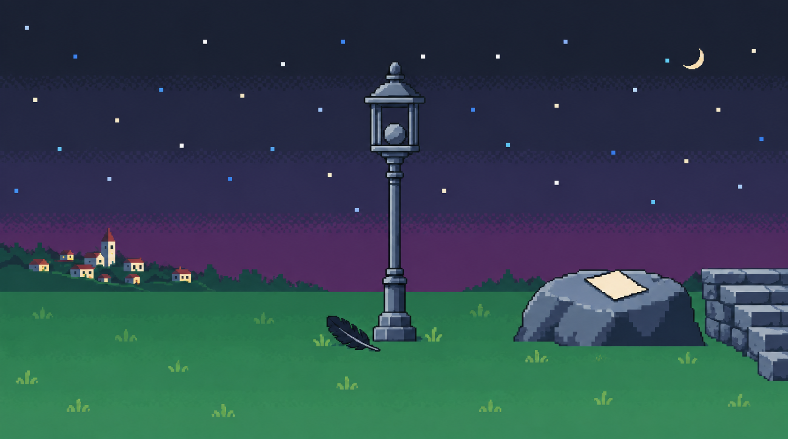

별빛 언덕 · 조금 더 풍성하게
기존 구도와 물건 배치를 유지하면서 하늘의 디더링, 작은 초승달, 드문 풀 무늬와 마을 창문 불빛을 보탰습니다.

보강한 배경

이전 배경과 게임 원본은 그대로 남겨 두었습니다. 다람은 비교 화면에만 표시되며 배경 PNG에는 들어 있지 않습니다.
기존 구도와 물건 배치를 유지하면서 하늘의 디더링, 작은 초승달, 드문 풀 무늬와 마을 창문 불빛을 보탰습니다.

보강한 배경
이전 배경과 게임 원본은 그대로 남겨 두었습니다. 다람은 비교 화면에만 표시되며 배경 PNG에는 들어 있지 않습니다.